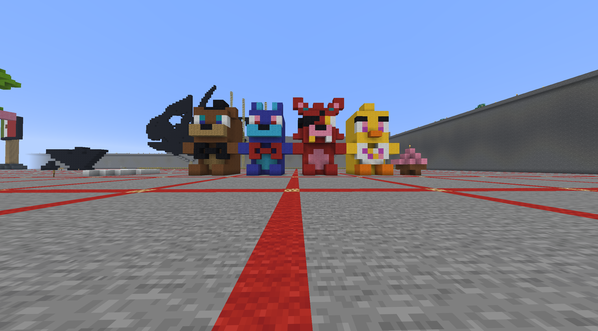

I chose the original freddy fazbear animatronics as my cultural significant object because it became a major part of internet horror and gaming culture. Its lore inspired many fans who created theories and other fan content. The franchise also helped popularize mascot horror and showed how an indie game could grow into a global entertainment franchise. (I also thought freddy fazbear and his friends seemed fun to build).
